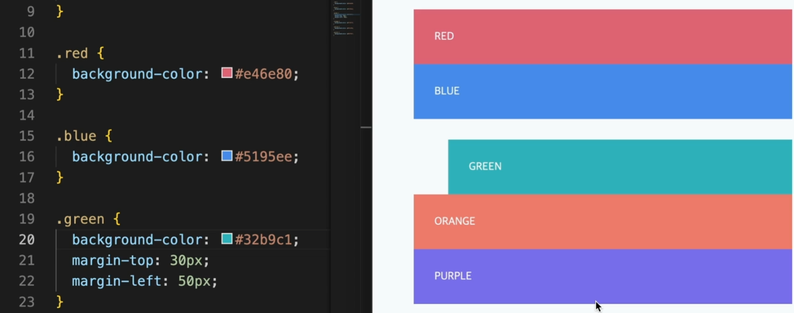
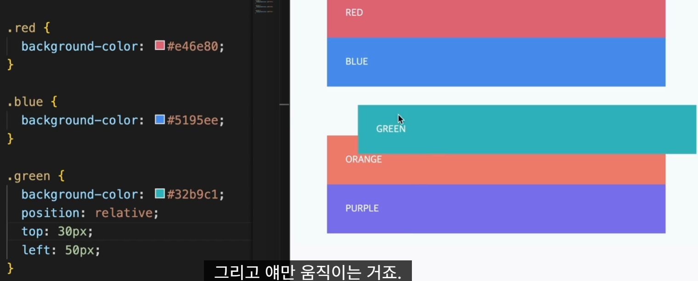

position에는 static, relative, absolute, fixed, sticky가 있다.
position은 글의 흐름이랑 상관없이 배치하고 싶을때 positio이라는 속성을 사용한다.
static은 position 속성의 기본값이며, 원래 있어야할 위치에 배치한다.
위치는 top, bottom,right, left가 있는데 값이 크면 영역 안쪽으로 이동하고 값이 작으면(-값)영역 바깥쪽으로 이동한다
margin이랑 position이랑 다른점은 margin은 값만큼 다른 요소들에게 영향을 주고,position은 다른 요소에 영향을 주지않고 position적용된 요소의 위치 이동만 한
 